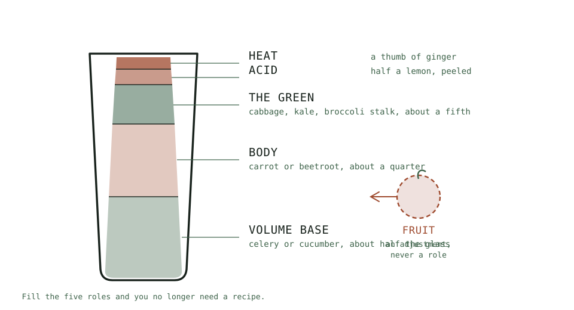

Guide
Juice Storage and Oxidation
How long fresh juice actually keeps, what changes while it sits, and the four habits that stretch the window.
As an Amazon Associate this site earns from qualifying purchases. Links to products may be affiliate links. This costs you nothing extra and does not change what gets recommended. Nothing here is medical advice.
Juice Storage and Oxidation
Fresh juice starts changing the moment it leaves the machine. That is not a defect and it is not a reason to drink everything immediately. It is a process you can slow considerably with four habits that cost nothing.
Getting this right is what makes batching possible, and batching is what turns juicing from a daily performance into a twice weekly one.

The two hour rule
Drink it within two hours of making it. That is the standard this site works to, and it is simpler to follow than any table of quality windows.
Two hours is not a safety deadline. It is the point past which you are drinking something measurably different from what came out of the machine: flatter, darker, and less bright. Juice made at seven and drunk at nine is still the thing you made. Juice made at seven and drunk at one is a reasonable drink that has lost the quality you went to the trouble of producing.
If two hours does not fit your morning, the fallback is specific rather than vague. Decant immediately into six ounce glass canning jars, filled to the rim, capped, and refrigerated. Not a large bottle. Not a jug with a lid. Small jars, filled so the juice touches the lid with no air whatsoever.
Everything below explains why that works and what it buys you.
What is actually happening
Three separate things change in a glass of standing juice, and they get conflated.
Oxidation. Dissolved oxygen reacts with compounds in the juice. This drives the colour change, the flavour going flat, and the loss of some of the more fragile constituents. It is the process worth fighting, and it is largely determined by how much air was beaten in during extraction.
Separation. Solids settle and liquid rises. This looks alarming and means almost nothing. Stir it and carry on. Separation is not spoilage and it happens to perfectly good juice within minutes.
Microbial growth. Slow at refrigerator temperature and the reason there is an outer limit at all rather than an indefinite one.
The first two are quality. The third is the boundary.
The four habits
Fill the container to the very top. This is the single highest value habit and the one most often skipped. Oxidation needs oxygen, and a half full bottle contains a reservoir of it sitting against the surface. Fill until the juice meets the lid with no headspace at all. If you have less juice than container, use a smaller container.
Use glass. Glass is non porous, does not hold flavour, does not stain, and does not permit the slow gas exchange that some plastics do. It also lets you see the colour, which is your best indicator of how the juice is holding up.
Refrigerate immediately. Not after breakfast. Every degree and every minute at room temperature accelerates all three processes. Juice destined for storage should go into the cold within minutes of being made.
Include acid. Half a lemon or a whole lime in the glass does real preservative work alongside its flavour job. The acidity slows the browning reactions noticeably, and a lemon-containing juice visibly outlasts one without.
Realistic windows
These apply when the two hour rule is not practical and you have decanted into small jars filled to the rim. They are quality windows rather than safety limits, and they vary with your produce, your hygiene, and your refrigerator.
Centrifugal juice. Best immediately. Holds acceptably for around a day. The high speed extraction beats a great deal of air into the juice, which front loads the oxidation.
Masticating juice. Commonly two to three days. The slow crush introduces far less air. This is the difference that makes batching practical and is a strong argument for the machine, set out on the juicing hub.
Pressed juice. Longest of the three, and a home hydraulic press is a serious commitment for most kitchens.
Composition moves these too. A citrus heavy juice holds longer than a green heavy one. Beetroot and carrot juices hold reasonably. Delicate leafy juices decline fastest.
Batching properly
If you are making two or three mornings at once, a few adjustments make the difference.
Make the whole batch in one run rather than in stages, so all of it starts its clock at the same moment.
Decant into individual portion sized bottles immediately rather than storing one large container you open repeatedly. Every opening replaces the headspace with fresh air, and a large bottle opened three times ages faster than three small bottles opened once each.
Fill each to the very top and cap it at once.
Store at the back of the refrigerator rather than in the door. Door shelves are the warmest part and swing in temperature every time the door opens.
Drink the oldest first, which sounds obvious and requires actually labelling them.
Bottles, and what to look for
The container matters more than most people expect, and the right ones cost very little.
Small beats large, decisively. This is the important variable and it is not close. A large container gets opened repeatedly, and every opening replaces the headspace with fresh air. Three small jars opened once each will comfortably outlast one large bottle opened three times, using exactly the same juice.
Six ounce canning jars are the right size and the right shape. six ounce canning jars with sealing lids are cheap, they stack, the lids seal properly, and six ounces is close to one sensible portion, so a jar gets opened once and finished. Filling a tall narrow bottle to the actual rim is fiddly. Filling a squat jar takes a second.
Glass over plastic. Glass is non porous, holds no flavour from the last batch, does not stain from beetroot or carrot, and permits no gas exchange. It also shows you the colour, which is the best available indicator of how a juice is holding.
Straight sides and a wide mouth. Narrow necks are difficult to fill to the very top without spilling and difficult to clean afterwards. A wide mouth takes a bottle brush.
Lid type. Screw caps with a silicone liner seal well and are easy to replace. Swing top bottles seal excellently and the rubber gasket eventually perishes, so check it periodically. Either is fine; a loose or worn lid is not.
Enough of them. The most common practical failure is having two bottles and a three portion batch. Buy more than you think you need, since they stack and cost little.
Wash them in hot soapy water with a bottle brush and let them dry fully upside down. A damp bottle stored capped develops a stale smell that transfers to the next batch.
Freezing
Freezing works better than most people expect and is genuinely useful for surplus.
Juice expands as it freezes, so leave a small gap despite everything said above about headspace. This is the one exception to the fill-to-the-top rule, and the alternative is a cracked bottle.
Freeze in portion sizes you will actually use. Thawing a large container and refreezing the remainder is worse than either.
Thaw in the refrigerator overnight rather than at room temperature or in warm water.
Expect a texture change. Frozen and thawed juice separates more enthusiastically than fresh and needs a proper stir. The flavour holds up reasonably well, particularly in citrus heavy and root vegetable juices.
Green juices freeze least gracefully. If something has to be frozen, make it the carrot and beetroot based one.
Taking it with you
Juice travels badly unless you plan for it, and the failure is always temperature rather than time.
Take it cold and keep it cold. An insulated bottle or a small cool bag with an ice block holds a portion for a working morning comfortably. A glass bottle in a warm bag is a juice that will be past its best by mid morning, regardless of how well it was made.
Fill to the very top before you leave, exactly as for refrigerator storage. A bottle that sloshes has a large air pocket working on it the whole journey.
Expect separation and do not read it as spoilage. A juice carried in a bag will separate more than one sitting still. Shake it before drinking.
If you routinely take juice out, an insulated flask designed for cold drinks is a better container than a glass bottle in a bag, and the only real drawback is that you cannot see the colour.
Reading the signs
Colour darkening. Oxidation. Still fine to drink, past its best. Common in green juices within hours.
Separation into layers. Normal. Stir.
A slight foam on top. Normal, particularly from centrifugal machines. Many jugs include a froth separator for exactly this.
Fizzing, or a lid that resists opening. Fermentation has started. Discard.
Sour or yeasty smell. Discard.
Anything cloudy that was clear, or slimy. Discard.
Juice is cheap relative to the alternative. When in doubt, pour it away.
One point on safety
Home juice is unpasteurised, which is worth stating plainly rather than burying.
For most healthy adults this is unremarkable and the storage windows above are about quality rather than risk. For anyone pregnant, elderly, very young, or immunocompromised, guidance in most jurisdictions treats unpasteurised juice as a higher risk food, and shorter windows or avoidance may be advised.
Check your own national food safety authority's current position rather than relying on any website's summary, including this one. Wash produce thoroughly, keep the machine clean, and refrigerate promptly, all of which you should be doing anyway.
RUN THE NUMBERS
Illustrative windows only. Your results will vary with produce, machine, and refrigerator.
| Approach | Realistic quality window |
|---|---|
| Drunk within 2 hours of making | Best case, always |
| Masticating, small jars to the rim, cold at once | 2 to 3 days |
| Masticating, half full container | About a day |
| Centrifugal, small jars to the rim | About a day |
| Centrifugal, left on the counter an hour first | Hours |
| Any juice, frozen in portions | Weeks, with texture change |
| One large bottle opened repeatedly | Shortest of all |
Every row uses the same produce and the same effort at the machine. The spread comes entirely from what happens in the ten minutes after extraction.
WHAT GOES WRONG
Juice brown by lunchtime. Air. Headspace in the bottle, or a delay before refrigerating, or both.
Separation mistaken for spoilage. Stir it. This wastes more good juice than any other misunderstanding.
Bitter flavour developing overnight. Citrus peel left on during juicing. Peel it next time.
A batch that only lasted a day on a masticating machine. Check the fill level and how quickly it reached the refrigerator.
Cracked bottle in the freezer. Filled to the top. Freezing is the exception to that rule.
DO THIS NOW
- Drink it within two hours of making it. That is the whole rule, and it removes the need for the rest of this page on most mornings.
- If you cannot, decant immediately into six ounce glass canning jars rather than one large container.
- Fill each to the rim so the juice meets the lid with no air gap at all, cap it, and refrigerate within minutes.
- Add half a lemon to your standard glass if it is not there already, and compare how the colour holds against a batch without.
Next
For the glass this is preserving, and the acid that does double duty as flavour and protection, see green juice built on vegetables.
The other output of every batch is worth keeping too. What to do with juice pulp covers which kinds earn a place in the kitchen and which belong on the compost heap.